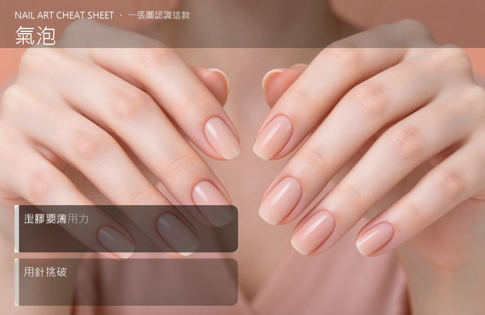

美甲凝膠氣泡原因：美甲表面凹凸的預防與修補是什麼？中階入門攻略
凝膠表面氣泡多半是攪拌太用力、上膠太快，把空氣裹進膠裡。
凝膠氣泡原因：美甲表面凹凸的預防與修補原理與辨識重點：美甲師不說的攪拌別太用力
新開罐或久放的色膠裡，本來就有肉眼看不到的小氣泡。刷起來看起來好好的，照完燈表面卻浮出一個個小圓點，像痱子一樣。原因多半是攪拌時空氣跑進去、或刷的時候太快把空氣裹進膠裡。
誰適合做凝膠氣泡原因：美甲表面凹凸的預防與修補？表面氣泡對號入座
自己動手做、習慣用力攪拌色膠、把不同膠互混、或從冰箱拿出來直接用的人。
凝膠氣泡原因：美甲表面凹凸的預防與修補美甲施作步驟：攪拌／上膠帶氣
新膠靜置 24 小時再用 → 攪拌要輕、畫圓慢慢帶、別整支筆亂搖 → 上膠一次一薄層 → 照燈前如果看到大氣泡，用針尖挑破再照，別用吹風機。
凝膠氣泡原因：美甲表面凹凸的預防與修補優缺點分析：美甲持久度與傷甲評估
| 優點 | 說明 |
|---|---|
| 習慣輕攪＋薄層，幾乎不會有氣泡問題，表面像鏡面一樣平，摸起來也滑。 | 是通用流派的招牌，中階就能上手 |
| 缺點 | 說明 |
| 氣泡長在表面還好，藏在裡面會造成日後起翹、掉膠，客人回來要重做。 | 前置與別為了調色用力亂攪，那是氣泡最大宗來源；也別把不同品牌膠互混，配方不合更容易起怪泡。沒顧好會打折 |

凝膠氣泡原因：美甲表面凹凸的預防與修補新手雷區：上膠要薄與常見錯誤
注意：別為了調色用力亂攪，那是氣泡最大宗來源；也別把不同品牌膠互混，配方不合更容易起怪泡。
凝膠氣泡原因：美甲表面凹凸的預防與修補和其他美甲做法的差別比較
氣泡跟刷痕不同：氣泡是圓形小點、凸出或凹陷；刷痕是一條條平行線。原因和處理方式都不一樣，要分開看。
凝膠氣泡原因：美甲表面凹凸的預防與修補美甲常見問題 FAQ
Q：氣泡在照燈前看不到怎麼辦？ A：很多小氣泡要照完燈才浮出來。可以先照一層透明膠試試，有問題趁表層還軟的時候磨掉重上。
Q：可以用吹風機把氣泡吹掉嗎？ A：不要。吹風機的熱會讓膠提前固化、還可能把灰塵吹上去。發現大氣泡用針尖挑破就好。